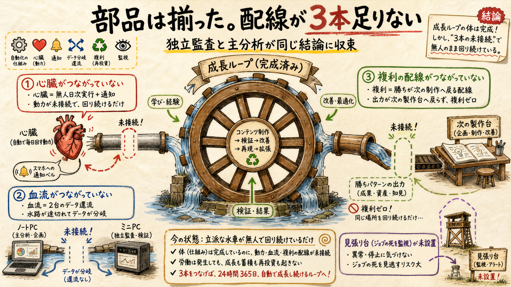

「今の仕組みで足りないことある？」への答えです。文脈ゼロの独立監査AIと私の検証を別々に走らせ、同じ結論に収束しました。足りないのは新しい部品ではなく、無人で回り続けるための配線です。全て施策台帳にM13〜M19として積み済み（承認待ち・未実装）。
今週作った3層（growth-tick / creative-loop / measures）自体の設計は独立監査でも健全と判定。
| 期日駆動の外側ループ | judge_due・コホート・coord期日・施策台帳を毎回機械走査（テスト付き純関数） |
| 施策台帳の規律 | recipe/metric/judge_due必須を機械強制・人間ゲートは--by-ownerでAIの勝手承認を阻止 |
| 内側ループの採点 | 報酬ハッキング対策（キー固定・passed再計算・違反0点・最良版採用）が機械側に |
| 計測の一部無人化 | metrics-weekly(MacBook週次)＋truth-sync(mini 30分毎・ショート系)＋relink-sweep(mini日次) |
| 律速台帳の鮮度契約 | 診断30日で再接地強制・第一律速の実験カバレッジ監視 |
独立監査＋私の一次検証の統合。ICEは施策台帳の優先度スコア。

| ID | 穴 | 重要度 | 証拠（一次情報） | 最小の直し方 |
|---|---|---|---|---|
| M13 | 心臓の不在 — tickが無人日に回らない・通知ゼロ | HIGH | launchd/cron登録なし・coordタスク3件が7-13日超過のまま滞留 | mini日次launchd＋WARN時のみスマホpush（ICE 21.3） |
| M14 | 2台でanalytics分岐 — SSOTの物理分裂 | HIGH | miniのcta-comment-log等はmini側のみ更新・pull-truth-syncは手動4ファイルのみ | sweep末尾でrsync還流 or tick冒頭にpull（ICE 18.7） |
| M15 | 複利ゼロ — 勝ちが次へ還流しない | HIGH | winning-patterns={patterns:[]}・preflight/script-buildはどれも読まない(grep実証) | preflightに読込チェック＋promote時にeval-schema更新。H42判定(7/15)で初運用（ICE 11.2） |
| M16 | CTR鮮度の死角 — 第一律速の指標だけ手動で腐りを検出できない | MID | measurement-staleはtimeseries齢のみ監視・ctr-summaryは6/30のまま | tickにfetched_at齢チェック1本（ICE 54＝最安・最速） |
| M17 | ジョブの死が沈黙 — ハートビート監視なし | MID | relink-sweepが今まさにChrome未ログインexit2で停止中（監査で発見） | 各ジョブがheartbeatを書きtickが齢チェック。即対応=miniのChromeへGUIログイン1回（本人操作）（ICE 24） |
| M18 | 台帳のロック無し並行書込 — 過去のH番号二重採番事故と同型 | MID | measures/experimentsはread-modify-write全置換・並行セッション常態 | coord.sh方式のロックファイル（ICE 20） |
| M19 | 反復タスクの風化 — 日次/週次施策の期日を誰も再生成しない | MID | M11/M12/週次レビューは「セッションが開いたらやる」前提のまま | recurring.jsonをtickが走査（ICE 14） |
今すぐ本人にしかできない1件: Mac miniのYouTube用Chrome（ポート9333）に一度GUIでログインしてください。relink-sweep（関連動画リンクの自動設定）が止まっており、コメントの誘導文が「関連動画リンクから」に変わった今、この導線の実体です。
効果÷手間の順。M16→M17→M14→M13は互いに前提関係があります。
| 順 | やること | 理由 |
|---|---|---|
| 1 | M16 CTR鮮度チェック（effort S）＋ mini ChromeへのGUIログイン（本人1回） | H42判定（7/15）を新鮮なCTRで迎えるため。期日が最も近い |
| 2 | M17→M14→M13 ハートビート → データ還流 → 無人tick+通知 | この順で積むと「miniで回して・正しいデータで・スマホに届く」が一本の線になる |
| 3 | M15 複利配線 | H42判定（7/15）が初の勝ちパターン。それまでに配線しておくと判定当日に床が上がる |
| 4 | M18/M19 | 守りの整備。並行セッションが増えるほど効く |